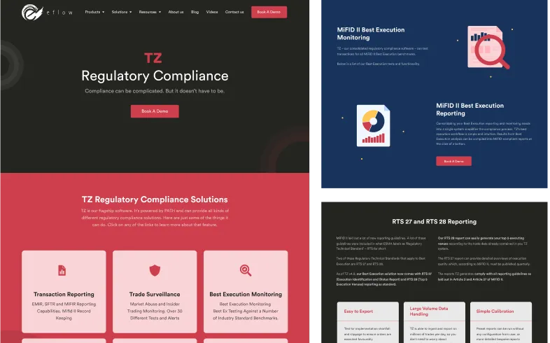
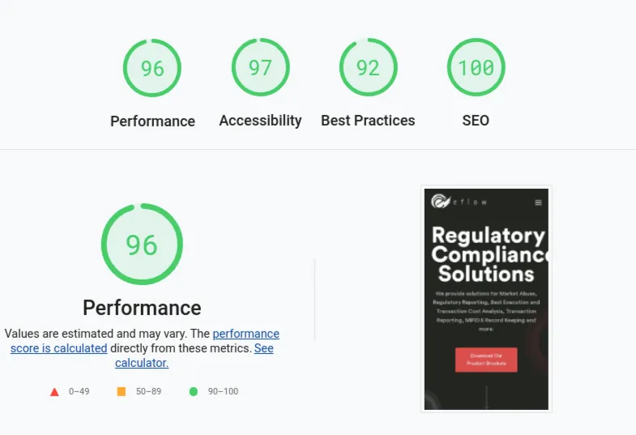

The client
Eflow has made regulatory compliance software for the financial services industry for over 25 years. It has more than 100 clients across five continents. Its software covers trade surveillance, best execution, transaction reporting and MiFID II record keeping.
Charlie, from their marketing team, got in touch in 2020 with one request: make the website faster. This was a BugleLab project, the web agency I ran at the time.
The problem
An audit showed the site took 15.4 seconds to load in full. Large, uncompressed images were part of the problem. We compressed every image, minified the scripts and CSS, and moved the images and files onto a proper CDN.
It still wasn't fast enough. The hosting was the real bottleneck: in one test the server took 7 seconds to start responding. Because the site was on WordPress.com rather than self-hosted WordPress, we couldn't just move it to a better server. Getting off that hosting meant a rebuild. The design needed a refresh anyway, so we proposed a fast static site.

The build
In 2021 Eflow commissioned the redesign and rebuild. Ihsan, our UX and UI designer, created a new custom design, and Charlie loved it.
We built it with Hugo, a static site generator that builds every page ahead of time. The site didn't need payments, so there was no reason to run a server. Each page was connected to Forestry.io, a content management system, so Charlie's team could edit content themselves without a developer.
The main goal was getting visitors to book a demo. Instead of a heavy booking plugin, we used Calendly for bookings, which kept the pages light.
The results
The new site scored 96 for performance in Google Lighthouse, and the whole site passed Google's Core Web Vitals assessment, which is based on how fast the site is for real visitors.

The lesson I took from it: if a slow site is on a platform you can't fix, don't spend weeks patching it. Move to a fast static site early. It saves the client time and money.
What they said
Our experience with BugleLab has been a very positive one. They helped us switch from our old buggy WordPress site to a much faster static site. They also helped set us up with a new CMS which allowed us to retain flexibility and the ability to implement new content easily without the need for a developer's input. BugleLab didn't just build our site, they gave us the tools we needed to be in control of it.
— Charlie, Marketing Executive, Eflow Global